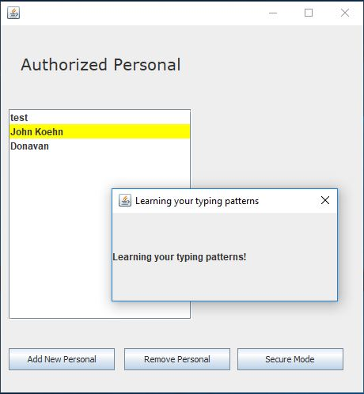
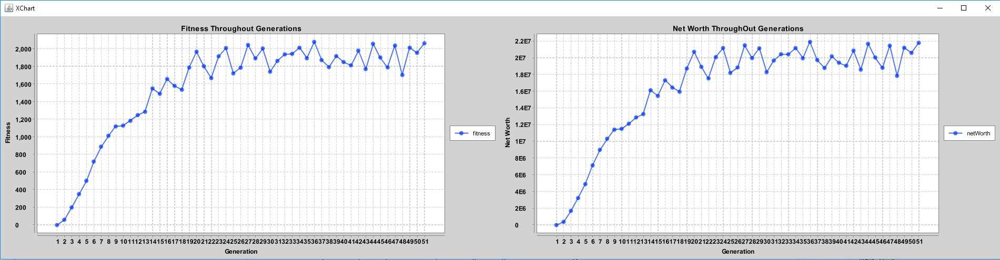
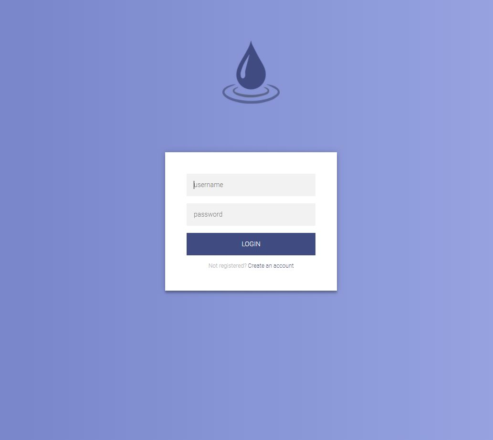

Projects

TYPO:
A security keylogger that learns your typing pattern
Typo is a security keylogger my friend’s John Koehn, Jacob Feldman, and I made at the Spring 2016 HackISU. One of my group members read an article that talked about the very distinct differences every person has in the way that they type. I did some research and found the main differences are in dwell time, from key to same key, and travel time between keys. We found that if we could get enough input data from just everyday typing, we could distinguish from person to person solely based on typing. So, with our application, you make a profile, it tracks your typing and stores it in csv files. Once it has enough data, you can put it in secure mode, and if your computer detects a different pattern it will lock your computer.
The program is designed with a key class, which just handles if a specific key is pressed or released. A KeyManager class, which registers all the keys you want to watch and spawns an event listener for them. We have a DwellTime, class which keeps an average of time between pressing specific keys, as well as some validation checks to get rid of outliers. Finally, we have a DwellTimeManager, which registers the keys, spawns a key listener and tracks the pressing of each key and writing the values to its respective file. So once your profile has enough data, your averages are checked against the ones stored, and if you have too many it fails it locks your computer, but if it recognizes it as you, then it begins to update your average time between keys.
Skills/Tools:
- Java
- Learned Basic Data Analytics through having to watch for patterns and unique differences during initial data collection.

ROBOSTOCK:
Genetic Algorithm to create the ultimate day trader
RoboStock was a project my friend’s John Koehn, Jacob Feldman, David Kirshenbaum and I worked on during HackISU in the Spring of 2017. This project spawned from us wanting to create a basic genetic algorithm, and pair it with something that we found interesting, and in this case, it was stocks. What RoboStock does is read in 10 years of stock data, closing and opening price, from 15 different stocks and try to become a successful day trader. It does this by spawning 200 bots, with random characteristics to begin with, characteristics like what price should it sell, at what momentum of the stock should it buy, the amount of time they hold on to the stock, etc. Each bot has a fitness value, which in our case would be their net worth. After the first generation of bots is done going through the data, the ones with the lowest fitness value drop and spawn more bots with random characteristics, and they “mate” with the best performing ones and share their genes with that next generation. Through this process, after enough generations, through natural selection we should have a day trader that holds the best characteristics to day trader on the provided stock data.
Our programs basic design was we had a bot class, which spawned with the random characteristics set, and purchased and sold based on basic momentum trading. Then we had a reproduction class, which would handle the spawning of new bots, and trading characteristics with the best performing ones. We had a Purchase, and Buy class which held the functions for the bots to buy and sell. Finally, we had a DataRender class which handle the drawing of the average fitness level of each generation so we could see if our algorithm was working properly.
Skills/Tools:
- Java
- Basic construction of genetic algorithm
- Front end development in java, to display data

DRIZZLE
Social Media site cretaed in Com S 319
Drizzle was a basic social media site my friend Matt Wall and I created in our Com S 319 class.
It was supposed to mimic Instagram, where you create a profile and can upload images, like/comment on image and follow people to see their upload images on your feed, or in our case we called it your “cloud”.
Through the creation of this project I learned efficient ways to cut down on backend calls, by encrypting and storing usernames in cookies.
As well how to store images and grab images in an application. This class and this project is one of the reason I want to go into server-side development and database design
Skills/Tools:
- HTML/CSS
- JavaScript
- PHP
- Learned server-side development
- Improved database design skills
- Learned a slightly efficient way to store images for an application